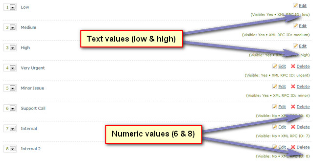

Documentation -


Documentation -

COMMERCIAL VERSION INCLUDES: - FREE upgrades for life - One time payment, NO subscriptions - ALL features unlocked and unlimited
XML-RPC API
This ticket software supports data transmission via XML-RPC. This is a useful tool and enables any application/device that supports sending xml as a HTTP data post to transmit and automatically open tickets. For this to work you`ll need to format the XML as shown below.
Simple XML
Maian Support parses xml using the Simple XML functions. This is a requirement of your server for this function to work.
XML-RPC API Key
To enable this feature you first need to create a API key and use this key in all data posts. The software checks this key to make sure the posts are coming from valid applications. To create a new key, login to your admin area and click 'Settings'. Scroll down to 'XML Data Post API Key'. Use the option provided to generate a new key or create your own.
Url Encode Data
All post data sent should be url encoded for better performance. This isn`t required, but it is recommended.
API Url
All data is posted to your main index.php file, with the following parameter: 'index.php?p=xml'
http://www.example.com/helpdesk/index.php?p=xml
XML Wrapper Structure
Your xml wrapper structure should look like the following:
<?xml version="1.0" encoding="UTF-8"?>
<datapost>
<api>YOUR KEY</api>
<tickets>
(ticket tags as shown below)
</tickets>
</datapost>
Ticket Data
Multiple tickets are possible with each transmission. Each ticket should be wrapper in <ticket></ticket> tags. Inside each data is the data related to the ticket. Custom field
data is also supported and is optional. Structure as follows:
<ticket>
<name>Persons Name</name>
<email>Persons Email</email>
<dept>Dept ID number</dept>
<subject>Subject of ticket</subject>
<comments>Comments</comments>
<priority>xml rpc ID as shown on priority level page in settings</priority>
<customfields>
(custom field tags as shown below)
</customfields>
<attachments>
(attachments tags as shown below)
</attachments>
</ticket>
Priority level must be XML RPC ID as shown on priority levels page in your settings. This may be a text value OR a numeric ID. See screenshot:

Custom Field Data
Custom field data is also supported and is optional. Structure as follows:
<f1>Custom field ID 1 data</f1>
<f2>Custom field ID 2 data</f2>
<f3>Custom field ID 3 data</f3>
<f4>Custom field ID 4 data</f4>
Each field tag contains the ID number of the field as shown in your admin area prefixed with an 'f'. 'f1' for example would be custom field ID 1. If the ID doesn`t exist in the system, the field tag will be ignored.
If the custom field value can be one of a number of specific options, the options you present to visitors in your application should mirror these.
Attachments
Multiple attachments are possible with each transmission. Attachment data must be base64 encoded:
<file>
<ext>File Extension</ext>
<data>Base64 Encoded File Data</data>
</file>
Each attachment should be wrapped in <file></file> tags and contain 2 additional tags, one for the file extension and one containing the base64 encoded data. File extension
examples would be:
<ext>pdf</ext>
<ext>JPG</ext>
The extension is not case sensitive. Same restrictions apply with attachments as with standard tickets. If restrictions are met, attachments are ignored. An example of a base64
encoded attachment is via the link below.
CDATA Tags - (Unparsed) Character Data
So that the xml doesn`t invalidate, CDATA tags should be used where applicable. The following characters will invalidate xml if CDATA tags aren`t used:
& < >
All text in an XML document will be parsed by the parser, but text inside a CDATA section will be ignored by the parser.
The term CDATA is used about text data that should not be parsed by the XML parser.
A CDATA section starts with <![CDATA[ and ends with ]]>
HTTP Post
XML data must be sent to your support system as a HTTP data post. Preferrably url encoded. On successful transmission an xml response is returned:
<?xml version="1.0" encoding="UTF-8"?>
<datapost>
<status>OK</status>
</datapost>
If an error occurs, the following is returned:
<?xml version="1.0" encoding="UTF-8"?>
<datapost>
<status>ERROR</status>
<reason>Reason for error..</reason>
</datapost>
Your own application should deal with the response accordingly.
Example XML files
Click here to view an example of base64 encoded attachments.
Click here to view an example basic xml file.
Click here to view the same file url encoded. (Note: Won`t parse as valid xml in xml readers/browsers. View in text editor.)
Experimental
If you have any comments or suggestions about the API, please let me know.